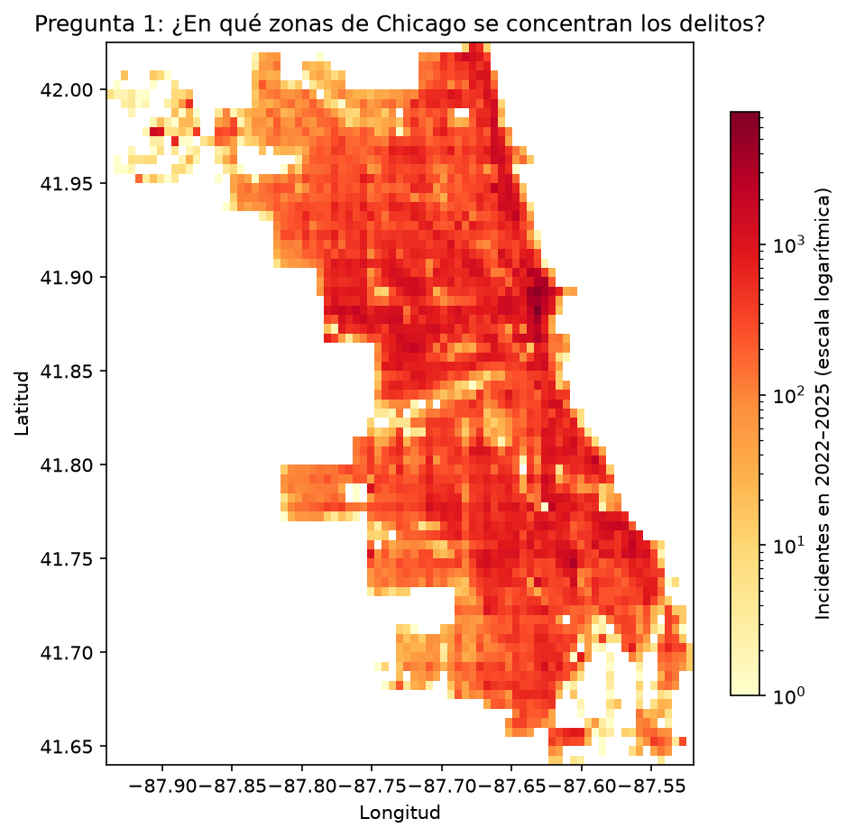
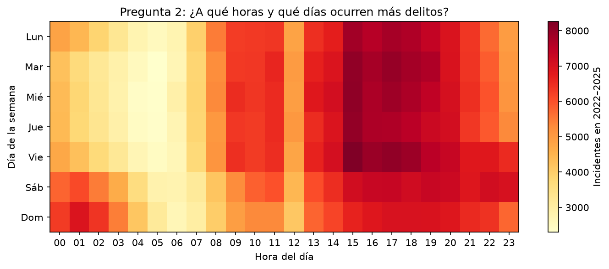

Cada semana, alguien en la policía de Chicago tiene que decidir a dónde mandar las patrullas. Son pocas para una ciudad de casi tres millones de habitantes, así que la pregunta no es si se puede vigilar todo, sino qué conviene vigilar primero.
Este reporte cuenta cómo intentamos ayudar a tomar esa decisión con datos. Juntamos todos los delitos reportados entre 2022 y 2025, los procesamos con herramientas de Big Data en la nube y entrenamos un modelo que, para cada zona de la ciudad y cada turno del día, estima cuántos delitos habrá la semana siguiente. Las zonas con el número más alto son las que conviene reforzar.
La respuesta corta es que el modelo ayuda: si la policía refuerza el 10 % de las zonas y turnos que señala, cubre el doble de delitos que si los eligiera al azar. La respuesta larga es más interesante, y tiene que ver con una regla simple que nos costó mucho vencer y con un límite que ningún modelo puede cruzar.
La ciudad en 1,096 piezas
La policía de Chicago ya divide la ciudad en 274 zonas de patrullaje, que en inglés llaman beats. Cada una es más o menos lo que cubre una patrulla. Decidimos trabajar con esas mismas zonas porque son las que el mando usa para repartir a su gente: decirle "refuerza la zona 1834 por la tarde" es algo que puede hacer el lunes, mientras que una cuadrícula abstracta no le sirve de nada.
Después partimos el día en cuatro turnos de seis horas: madrugada, mañana, tarde y noche. Eso deja 1,096 combinaciones de zona y turno. Para cada una, el modelo responde una sola pregunta: ¿cuántos delitos habrá aquí la próxima semana?
Un millón de reportes
Los datos vienen del portal de datos abiertos de la ciudad, donde el Departamento de Policía publica cada incidente reportado: qué pasó, dónde y a qué hora. Solo 2025 son 238 mil reportes. El portal sigue corrigiendo y agregando casos con los meses, así que guardamos cada descarga con su fecha; de otro modo nadie podría repetir nuestros números.
Para procesarlos montamos un pequeño clúster en Amazon Web Services. En realidad es una sola máquina, pero corre las mismas herramientas que un clúster grande: Hadoop para guardar los archivos, Spark para procesarlos y Hive para consultarlos como tablas. Si mañana hubiera que analizar diez ciudades en lugar de una, bastaría con agregar máquinas sin reescribir el análisis.
La limpieza fue menos dramática de lo que esperábamos. No tuvimos que tirar ningún registro: unas dos mil coordenadas dudosas se corrigieron con el centro de su zona, y casi quince mil reportes con hora inventada (el sistema pone medianoche cuando no se sabe) se marcaron para no confundir al modelo.
Lo que dicen los datos
Antes de predecir nada, miramos cómo se reparte el delito. Cuatro patrones se repiten año tras año.
Se concentra en pocos lugares. El 10 % de la ciudad, medido en cuadros de 500 metros, reúne el 35.6 % de los incidentes. Las manchas más oscuras están en el centro, el oeste y el sur.

Tiene horario. La hora con más delitos son las tres de la tarde. Entre semana el pico va de las 15 a las 19 horas; el fin de semana sube la madrugada del sábado y el domingo. Seis de cada diez delitos ocurren entre el mediodía y la medianoche.

Tres tipos son más de la mitad. El robo sin violencia (23.2 %), la agresión física (17.9 %) y el daño a la propiedad (11 %) suman más de la mitad de todos los reportes. Los delitos de drogas y de armas los dejamos fuera del modelo por una razón que explicamos más adelante.

Sube en verano, y 2025 fue más tranquilo. En verano hay un 9 % más delitos que el resto del año. Y 2023 y 2024 tuvieron más que 2025, un detalle que importa más de lo que parece.

La regla que no podíamos vencer
Entrenamos dos modelos de aprendizaje automático, Random Forest y Gradient Boosted Trees, con las semanas de 2025 anteriores a octubre. Luego les pedimos que predijeran las diez semanas siguientes, de finales de octubre a finales de diciembre, sin dejarles ver nada de ese periodo. Con el pasado se aprende, con el futuro se califica.
Nuestro primer modelo se equivocaba en promedio por 1.64 delitos por zona y turno.
Para saber si eso es bueno hay que compararlo con algo. La comparación más dura resultó ser la más simple: repetir, para cada zona y turno, su promedio histórico. Esa regla de una línea se equivocaba por 1.61. Perdíamos.
Probamos lo obvio: darle más historia. Repetimos todo con cuatro años en lugar de uno, y todo quedó un poco peor. La razón: 2023 y 2024 tuvieron más delitos que 2025, así que promediar toda la historia sobreestima el presente.
Lo que más anticipa a una zona no es su historia completa, sino su último año.
Con esa idea agregamos variables nuevas: cuántos delitos hubo hace dos semanas y hace exactamente un año, el promedio de las últimas 52 semanas, la época del año, lo que pasó en las zonas vecinas y los días festivos. Los que más ayudaron fueron los que miran el último año. El clima también ayudaba, pero lo descartamos: usamos el clima que de verdad hizo, y un lunes nadie sabe qué temperatura hará el viernes.
El modelo mejorado se equivoca por 1.59 y le gana al promedio histórico en las diez semanas de prueba. Pero por poco: la regla "repetir el promedio del último año", sin modelo, ya está en 1.61.
La mejora no vino de un algoritmo más sofisticado, sino de mirar el periodo correcto: casi el 40 % del modelo es el promedio de las últimas 52 semanas. Y queda una marca más a la derecha, a la que ningún modelo llega.
Error promedio por zona y turno en las 10 semanas de prueba
Delitos de diferencia entre lo que se predijo y lo que pasó. Más a la derecha es mejor.
El límite que ningún modelo cruza
En algún momento dejamos de preguntarnos cómo mejorar y empezamos a preguntarnos cuánto se puede mejorar. Es una pregunta que casi nunca se hace y que cambió por completo cómo leemos los resultados.
Aunque supiéramos exactamente qué tan peligrosa es cada zona en cada turno, el número de delitos de una semana concreta seguiría teniendo una parte de azar, igual que una moneda bien balanceada no cae cara exactamente la mitad de las veces. Calculamos que ese azar, por sí solo, deja un error de alrededor de 1.53. Nuestro modelo está en 1.59. Quedan unas centésimas por ganar, no más.
Lo mismo pasa con la cobertura. Si alguien supiera de antemano cuáles van a ser las zonas más activas y reforzara justo el 10 % de ellas, cubriría como máximo el 26 % de los delitos. Al empezar el proyecto nos pusimos como meta el 40 %, tomada de estudios que usaban cuadrículas mucho más pequeñas. Con esta forma de dividir la ciudad, esa meta era imposible desde el principio.
Estudios hechos en otras ciudades, como Dallas, llegan a la misma conclusión: ganarle a "repetir lo reciente" es lo más difícil de la predicción de delitos.
Qué significa para una patrulla
Al mando policial no le dice mucho que el error sea 1.59. Lo que necesita saber es otra cosa: si refuerzo cierta cantidad de zonas y turnos, ¿qué parte de los delitos queda dentro?
Si las eligiera al azar, cubriría justo la misma proporción: el 10 % de las zonas, el 10 % de los delitos.
Siguiendo al modelo, con el 10 % de las zonas y turnos, que son 110 de 1,096, se cubre alrededor del 20 % de los delitos: unos 750 por semana, contra unos 380 al azar. Es el doble con el mismo número de patrullas.
La línea punteada es lo que lograría alguien que conociera el futuro: 26 %. El modelo llega al 76 % de eso.
La ventaja del modelo es mayor cuanto más concentrado está el esfuerzo. Con el 5 % de las zonas cubre más del doble que el azar; con el 30 %, casi la mitad de los delitos. Dónde poner el corte depende de cuántas patrullas haya, y esa decisión le toca a quien conoce el presupuesto.
Un detalle que nos parece una buena noticia: las zonas que marca el modelo se parecen mucho a las que marcaría la experiencia. El modelo no contradice a los comandantes; ordena lo que ya intuyen, le pone números y lo actualiza cada semana.
Prueba tú: mueve el control de la gráfica.
Delitos cubiertos según cuántas zonas y turnos se refuercen
Promedio de las 10 semanas de prueba de 2025, con unos 3,800 delitos por semana.
¿Y qué tipo de delito?
La pregunta original también preguntaba de qué tipo serían los delitos. Construimos un clasificador que, para cada delito, intenta adivinar su tipo entre siete grupos usando solo lo que se sabe antes de que ocurra: la zona, el turno, el día, la época del año y la mezcla de delitos de esa zona en el último año.
Acierta 3 de cada 10 veces, prácticamente lo mismo que la regla "será el tipo más común de esa zona". En la misma esquina puede pasar un robo, una pelea o un vandalismo, y nada en los datos permite saber cuál sigue. Pero hay algo que sí se puede anticipar bien: la mezcla.
Zona 1834, de 12 a 18 h: de cada 100 delitos, ¿cuántos fueron de cada tipo?
Lo que esperábamos antes de las 10 semanas de prueba, contra lo que pasó.
Es como una bolsa de dulces surtidos: no sabes cuál te va a salir, pero sí de qué está hecha. Para la policía, eso sirve para decidir qué tipo de presencia mandar a cada zona, aunque no diga qué va a pasar en cada esquina.
Lo que este modelo no hace
Predecir delitos tiene riesgos reales, y algunos los tomamos en cuenta desde el diseño.
Predice lugares y horarios, nunca personas. El modelo no usa ni produce información sobre individuos.
Deja fuera los delitos que dependen de dónde ya hay policía. Las detenciones por drogas o armas se registran sobre todo donde hay más patrullas. Si las incluyéramos, el modelo aprendería a mandar más patrullas a donde ya hay más patrullas, y el sesgo se alimentaría solo. Por eso trabajamos con delitos que normalmente reporta una víctima.
Solo muestra agregados. Todo lo que publicamos son conteos por zona, turno y semana; ningún reporte individual.
Y tiene límites técnicos: depende casi por completo del historial reciente, solo anticipa el tipo de delito como mezcla, corre en una sola máquina y los datos de origen siguen cambiando con el tiempo.
Lo que aprendimos
- Calcular el techo antes de fijar metas. Saber que el máximo posible era 26 % cambió por completo cómo valoramos un resultado de 20 %.
- Comparar siempre contra una regla simple. Si un modelo no le gana a "repetir el promedio", hay que decirlo. Esa comparación fue la que nos llevó a las variables que sí funcionaron.
- La mitad del trabajo es disciplina. Guardar la fecha de cada descarga, no dejar que el futuro se cuele en las variables y documentar cada decisión fue lo que volvió confiables los resultados.
Lo que sigue es probar un modelo pensado específicamente para contar eventos, como la regresión de Poisson; agregar pistas de "contagio", porque un delito suele subir el riesgo de las zonas cercanas durante unos días; usar un pronóstico del clima real, y hacer que todo se actualice solo cada semana. Pero quizá lo más importante ya no esté en el modelo, sino en ponerlo a trabajar y medir qué pasa en la calle.
Si quieres ver las predicciones zona por zona, la presentación del proyecto tiene un mapa en vivo con las diez semanas de prueba.
Cómo lo hicimos
Seguimos la metodología CRISP-DM en cuatro fases: plan y arquitectura (Fase 2), preparación de datos y modelado con PySpark (Fase 3), y resultados e impacto (Fase 4).
- Datos: delitos de 2022 a 2025 del portal de datos abiertos de Chicago, más el clima diario del aeropuerto O'Hare.
- Infraestructura: una instancia EC2 en AWS creada con Terraform, con Hadoop (HDFS y YARN), Spark y un catálogo Hive. Los datos se organizan en un data lake con capas de datos crudos, limpios, listos para modelar y en cuarentena.
- Unidad de análisis: zona de patrullaje por turno de seis horas por semana.
- Prueba: las semanas 42 a 51 de 2025, separadas por fecha, nunca al azar.
- Modelo final: Random Forest de 50 árboles y profundidad 8, con variables de retrasos, estacionalidad, zonas vecinas y festivos.
- Exclusiones: delitos de drogas y armas, reportes con hora desconocida y la zona 6100, que agrupa ubicaciones ocultas por privacidad.
Las cifras completas
| Forma de predecir | Error medio | Delitos cubiertos con el 10 % |
|---|---|---|
| Promedio del último mes | 1.72 | 19.0 % |
| Primer modelo | 1.64 | 19.8 % |
| Promedio histórico | 1.61 | 20.0 % |
| Promedio del último año | 1.61 | 20.0 % |
| Modelo mejorado | 1.59 | 19.9 % |
| Límite por azar | ≈ 1.53 | 26 % como máximo |
| Forma de predecir | Acierta el tipo | Entre los 2 más probables |
|---|---|---|
| Regresión logística | 29.4 % | 48.5 % |
| Random Forest | 29.3 % | 48.5 % |
| Tipo más común de la zona | 29.1 % | 48.9 % |
| Tipo más común de la ciudad | 24.6 % | 44.0 % |